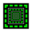
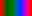
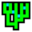

DojoCAD
v2.3.9: 2022-01-11
Source
Feedback
Bugs
Contact:
Forums
Reddit
YouTube
git
Thanks: AeliosZero
This is a tool for planning a valid Warframe Clan Dojo layout. I've tried to model the in-game room boundaries and constraints as accurately as possible.
All the room boundaries have been found by in-game experiment, waypoint measurement, or straight-up guesswork. If you see a problem or if you'd like to help me determine bounds and stats for the old, discontinued rooms then please drop me a line!
The starter Clan Hall is already added by default.
Click the  button to select a category and room to add.
Then drag and click where the room should be placed.
button to select a category and room to add.
Then drag and click where the room should be placed.
Click and drag anywhere in the grid area to move around.
This includes clicking on a room, as long as that room isn't currently selected (see Selecting a Room).
If a room is selected and being dragged into position, then dragging near the window boundary will automatically scroll in that direction. The closer the cursor is to the window boundary the faster the scrolling.
Use the mouse wheel to zoom in and out. The cursor marks the center point for zooming.
On a touch screen, pinch two fingers to zoom in or spread them to zoom out.
The highlighted floor on the left side of the screen shows which floor is currently in view. The floor numbers start at 1 on the ground floor and go up from there. Below floor 1 is B1, and they count down from there.
Use the  button above the floor listing to view the next floor up.
Use the
button above the floor listing to view the next floor up.
Use the  button to view the next floor down.
button to view the next floor down.
You can also use the up and down arrow keys to move between floors.
Click on a floor to go directly to it.
The floor listing has a maximum number of floors it will display at one time. If there is overflow
on the top any/or bottom then the  and/or
and/or  buttons will be replaced with
buttons will be replaced with  and/or
and/or 
Floors containing rooms with errors will be highlighted in red.
Select a room by clicking on it without dragging. The currently selected room will have a blue outline around it.
You can also click on a room that's not in the current floor but visible in the background in gray to go directly to that room's floor and select it. Note that if there's a room on a floor directly above the room where you're trying to click then you will select that one instead, even if you can see the lower room through the holes in the upper one.
Hold the Shift key or click the
 button to enable multiselect mode.
button to enable multiselect mode.
While multiselect is enabled, clicking on rooms will add them to the current selection. Clicking on an already selected room will unselect it.
While multiselect is enabled, clicking and dragging will create a selection box. All rooms in the selection box will be added to the current selection when the mouse button or touch is released.
By default multiselect mode only selects rooms on the current floor. Holding both Shift and Control/Command while dragging or clicking a room will select across all floors. You will see a different multiselect icon,  when multi-floor selection is enabled.
Use Control-A to select all rooms on the current floor.
Use Shift-Control-A or Shift-Command-A to select all rooms in the entire layout, across all floors.
Under the room menu, use
 Select All to select all rooms of the same type across the whole dojo.
Select All to select all rooms of the same type across the whole dojo.
Click the  button to show a menu of room categories. Click one of these categories to show a menu of rooms.
Click one of those rooms to add one under your cursor. Drag and drop the room to where you want to
place it.
button to show a menu of room categories. Click one of these categories to show a menu of rooms.
Click one of those rooms to add one under your cursor. Drag and drop the room to where you want to
place it.
If you have already added a room once, then the
 menu will contain a quick option at the bottom to add another copy of the last room you added.
menu will contain a quick option at the bottom to add another copy of the last room you added.
Clicking on the currently selected room or rooms will bring up the room menu. Click Duplicate to create a copy of the room or rooms to place somewhere else.
Hitting the D key when a room or rooms are selected will duplicate the without having to bring up the menu.
Hitting Escape while dragging a newly created room or rooms for the first time will cancel the add operation and remove the room or rooms.
After selecting one or more rooms, click again and drag on one of the selected rooms to move them.
Hold down Control/Command while dragging rooms to snap their position to the nearest 8 meters on the grid. Otherwise the rooms' positions are snapped to the nearest meter.
If you drag one room so one of its doors is close to another room's door that's facing the opposite direction, then all of your currently selected rooms will be snapped to connect those doors.
Hold down Shift while dragging rooms to disable door snapping.
Note that Shift-dragging, Alt-dragging, and door snapping also apply to newly created or pasted rooms that are in the process of being placed for the first time.
Hitting Escape while dragging one or more rooms will cancel the operation and return the rooms to where they started.
Clicking again on the a currently selected room will bring up a menu. Click
 to rotate the rooms 90 degrees.
to rotate the rooms 90 degrees.
You can also press the R key to rotate the seleted rooms. This also works while dragging the rooms.
If more than one room is selected, then all of the rooms will be rotated together. The center of rotation depends on how the rotation was triggered.
Elevators span two floors, either going up from the current floor or going down. To switch which
direction an elevator is going, select only that elevator and then click again to bring up the room menu. Select
 to swap the direction the elevator is going.
to swap the direction the elevator is going.
Clicking again on a currently selected room will bring up the room menu. Click
 to delete the selected room or rooms.
to delete the selected room or rooms.
Press the Delete key to delete the selected rooms without having to bring up a menu.
Hold down Alt and click on an unselected room to delete it with one click.
Hold down Alt and click on an selected room to delete all selected rooms with one click.
With one or more rooms selected, click on a selected room and use the
 Copy option in the room menu to copy the selected rooms to an internal clipboard. You can also use
Control-C.
Copy option in the room menu to copy the selected rooms to an internal clipboard. You can also use
Control-C.
Use the
 Cut option or Control-X to copy the selected room or rooms to
the internal clipboard and delete the originals.
Cut option or Control-X to copy the selected room or rooms to
the internal clipboard and delete the originals.
When there are rooms on the clipboard, Under the
 Add menu will be a
Add menu will be a
 Paste option. You can also use Control-P.
Paste option. You can also use Control-P.
Click on  then
then  to start fresh.
to start fresh.
Note that this opens as a new link, so you can use your browser's Back button to go back to your previous layout.
Click on  or use Control-Z to undo your last action. Actions include moving,
rotating, changing floors, adding,
deleting, and changing the selection. You can continue clicking
or use Control-Z to undo your last action. Actions include moving,
rotating, changing floors, adding,
deleting, and changing the selection. You can continue clicking
 or using Control-Z to undo previous actions.
or using Control-Z to undo previous actions.
Click  or use Control-Shift-Z or Control-Y to redo an action you have just
undone. You can continue clicking
or use Control-Shift-Z or Control-Y to redo an action you have just
undone. You can continue clicking
 or using Control-Shift-Z/Control-Y to redo previously undone actions.
or using Control-Shift-Z/Control-Y to redo previously undone actions.
Performing another action after undoing will clear out all the redoable actions.
You can undo a maximum of 250 actions.
There are a few cosmetic options available, beyond what's in the game. They don't affect any of the core layout mechanics or rules. They are intended for making the layout easier to follow and understand.
Duplicating or copying a room will carry over any cosmetic customizations.
By default, rooms are gray like they appear in the in-game map. However, under the room menu is a  Color option. This will bring up a color picker that can assign a color to all the selected rooms.
Use the three sliders to adjust the hue, saturation, and brightness.
Click
 Clear to reset the selected rooms back to gray.
Clear to reset the selected rooms back to gray.
Click
 Save or just close the color picker to save the color change.
Save or just close the color picker to save the color change.
Click
 Cancel to close the color picker and reset and changes.
Cancel to close the color picker and reset and changes.
Beside
 there are four options for selecting rooms with similar colors.
there are four options for selecting rooms with similar colors.
If there are already some rooms with colors in the layout, then those colors will create markers on the saturation, and luminance sliders. Moving any slider close enough to a mark will snap to them. The snapping can be disabled by holding the shift key.
If you have multiple rooms selected that currently have different colors, then only the color parts that are modified will be changed. For example, if you have a red and a green room selected, and only adjust the brightness slider without touching hue, then the rooms will still be red and green and only their brightness will be changed.
Any room can have a label assigned to it. Under the room menu is a Label option that will bring up a label editor. It's only available if a single room is selected.
Enter the room's label in the the text box. The label can have multiple lines. It will be centered on the selected room.
Use the scale slider to change the size of the label.
Like with the color pickers, the sizes of other labels in the layout will show up as markers that the scale slider can snap to. Hold The shift key to disable snapping.
Click
 Clear to remove the label from the selected room.
Clear to remove the label from the selected room.
Click
 Save or just close the label editor to save the label change.
Save or just close the label editor to save the label change.
Click
 Cancel to close the label editor and reset and changes.
Cancel to close the label editor and reset and changes.
If a room has a color customization then that color also applies to the label.
A room can be selected and dragged by clicking on its label.
Under the Utility section of the
 Add menu there is a
Label object.
Add menu there is a
Label object.
The Label object does not count towards the resource totals or dojo boundaries. It allows you to place a label that's not tied to the center of a dojo room. You can place as many of these as you want.
When generating a PNG, the boundaries of the image are determined by the actual rooms and not the labels. There is a little bit of a margin, but if a label is too big, or if a label object is placed too far away from the rooms themselves, then it won't show up completely or at all.
There are three types on constraints on room placemement: Room Resources, Room Boundaries, and Room Rules.
There are three constraints that affect all rooms in the Dojo:
The current Room count, Energy, and Capacity of your dojo is displayed in the lower left. When any of those resources is exceeded it will be highlighted in red.
If you move a room too close to another room so that their boundaries overlap then they will be highlighted in red. The dojo layout is invalid as long as there are any room boundaries overlapping.
Note that rooms on adjacent floors may also overlap boundaries. If a currently visible room is overlapping with a room on a different floor then you will see just the other room's boundary in red.
The Dry Dock is very big. The outline and bounds visible on the Dry Dock do not extend all the way to the back of it, which extends roughly 6-7 times farther than the visible size of the Dry Dock. Boundary collisions with the entire length of the Dry Dock will still be detected, but it may not be obvious what's colliding unless you zoom out and find the Dry Dock.
The old, discontinued dojo rooms are available to place in your layout. They come
with a warning icon  because there are number of caveats:
because there are number of caveats:
Pretty much the only information I have about the discontinued rooms is from screenshots and data other players have provided.
I can take a guess at boundary dimensions. But knowing that the discontinued rooms do not follow a standard grid, my guesses are looser than usual. All I know for sure is that they do not line up with each other or the newer rooms.
I know that the Old Clan Hall provides the same energy and capacity as the starter Clan Hall, and that it's no wider than the starter Clan Hall. Everything else I'm assuming:
There are a handful of constraints that apply to specific rooms:
When a room is violating a specific rule then it will be highlighted in red.
When a room is violating a resource, boundary, or rule constraint it will be highlighted in red.
Clicking on the room twice to bring up the room menu. Beside the room name will be a
 button. Clicking on it will bring up a list of the constraints that the room is breaking.
button. Clicking on it will bring up a list of the constraints that the room is breaking.
The floor indicator along the left side of the screen will hightlight in red any floors containing rooms with constraint violations.
The  menu will show
menu will show  buttons next to rooms that will have a constraint violation if added. This also applies to the
Duplicate option in the individual room menus.
buttons next to rooms that will have a constraint violation if added. This also applies to the
Duplicate option in the individual room menus.
Finally, in the top bar there is a global error icon, either
 ,
,
 , or
, or
 .
Click on it to bring up a list of all errors or warnings detected in the dojo.
.
Click on it to bring up a list of all errors or warnings detected in the dojo.
When adding or duplicating a room, next to the energy and capacity constraints will be a
 resources button. Clicking this will display the resources needed to build that room, considering
the current clan tier.
resources button. Clicking this will display the resources needed to build that room, considering
the current clan tier.
At the bottom of the screen, next to the total rooms, energy, and capacity, is another
 resources button. Clicking this will display the total resources needed to build the entire dojo,
considering the current clan tier.
resources button. Clicking this will display the total resources needed to build the entire dojo,
considering the current clan tier.
Clan tier is determined by how many Barracks rooms are present. If the dojo contains Barracks then all resources displayed will be for the corresponding tier. Note that will be an overestimate; you're going to build at least some of your dojo before building any Barracks.
The current layout and view are continually saved to your browser's location bar. If you go forward or back in your browser history, then reversing that should restore the layout and view you had previously.
A copy of the browser location is also available by clicking
 , then
,
then Copy. This will place a link to the current layout in your
clipboard. Anyone can use this link to recreate your dojo layout.
, then
,
then Copy. This will place a link to the current layout in your
clipboard. Anyone can use this link to recreate your dojo layout.
Click
 , then
, then
 to
open Local Storage.
to
open Local Storage.
Use Add to add the currentl layout as a new entry in Local Storage. You will be asked to give the layout a name.
If there is an existing entry in Local Storage, then you can use
 to overwrite that entry with the current layout.
to overwrite that entry with the current layout.
An existing entry can be removed with
 .
.
Click on the the Name and Date column headers to sort by that column. Clicking again will reverse the direction of the sort.
Note: Local Storage is specific to your browser instance. To share a layout with other people, or with yourself on another browser, you will have to use to share a link.
Click  then
then  to bring up a menu for exporting your dojo layout to one or
more PNG files.
to bring up a menu for exporting your dojo layout to one or
more PNG files.
Click Create to generate the PNG images. They will be displayed as links for you to download.
If your dojo has multiple floors then a separate image is generated for each floor. The same size and positioning is used for each floors' image, so they will line up on top of each other.
If you have a huge dojo and generate a huge image then it may take a little while for the image links to appear.
Basic structure checking is enabled by default. All you need to do is add a spawn point.
On rooms that support being a spawn point, click on the room menu and select Set Spawn Point to designate that room as the spawn point. If another room is already designaged as the spawn point then the spawn point will be moved.
The designated spawn point room will have a marker on it.
To remove the spawn point from your layout, click on the spawn point room menu and select Remove Spawn Point. After this your layout will not have a spawn point.
When a spawn point is designated the dojo will be checked to make sure every room is connected to the spawn point room, either directly or indirectly through other rooms.
Rooms that are not connected to the spawn point room will be highlighted in yellow and show up as
 warnings.
warnings.
Enable Advanced Structure Mode by clicking
 , then
,
then checking the Enabled checkbox.
, then
,
then checking the Enabled checkbox.
A spawn point is required for Advanced Structure Mode.
When Advanced Structure Mode is enabled your dojo layout will be overlayed with green lines. This shows the internal structure of your dojo as it would exist inside the game.
Whenever you add a room do your dojo, you start with a door. The door you use to create a new room creates a parent-child relationship between the rooms on either side. The room built first is the parent, the room bult second is the child. This build order is mostly set in stone. It's there until those room are destroyed.
If you start from any room, then the build order of its child rooms, and their child rooms, and their child rooms, etc., branch out like a tree. Computer science has a technical term for this kind of structure. It's called a "tree". Computer Science is not good at naming things.
The root of this tree is your Spawn Point. The branch that starts at your Spawn Point contains all other branches inside it.
When Advanced Structure Mode is enabled, DojoCAD will try to build the tree structure from your layout, starting with the spawn point. It will be able to do so automatically, unless your layout contains loops.
The tree structure is shown in Advanced Structure Mode as green arrows over the doors, pointing from parent room to child room. These arrows are joined by lines through the center of each room. Each room's center is highlighted with a larger green square.
When Advanced Structure Mode is enabled and your layout has a valid tree structure the room menu will have a few more options for selecting rooms.
Select a single room and use Branch to select all the child rooms branching out from that room.
In-game, the branch under a room represents all the rooms that must be destroyed before that room can be destroyed, assuming your spawn point stays the same.
Select a single room and use Root to select the path of parent rooms from that room leading back to the Spawn Point.
In-game, the root path leading leading back to the spawn point represents all the rooms that must be built before that room can be built, assuming your spawn point stays the same.
If the layout has a valid tree structure, then the spawn point can be moved anywhere and it will still be a valid tree.
If the spawn point is moved from one side of a room to the other along the tree, then the branch structure for that room changes. Its previous parent becomes one of its child branches, and one of it's previous child rooms becomes its parent. This is sometimes helpful in destroying a room while preserving one of its previous child rooms, but it practice it's is pretty hard to avoid destroying tons of other rooms.
The defining characteristic of a tree is that branches don't connect again after branching out. With valid a tree there is no way to return a room you already visited without retracing your steps. You must ultimately end up at the end of a branch.
Obviously, you can build a dojo with a loop in it. So what's going on?
You'll notice that no other map in the game has loops in it. Explore the map on any in-game mission and you'll only find dead ends. There are no large-scale loops involving multiple rooms. It seems only dojos can have those.
I'm pretty sure that under the covers, it's still the same basic engine driving both mission maps and dojos. Both use tree structures to define the layout in terms of branches. However, dojos have a special kind of door that can cross between two branches. I'm calling this a Cross Branch Door because I'm not good at naming things, either.
When Advanced Structure Mode is enabled, any loops detected will be shown in two ways. The rooms involved in the loop wll be as highlighted as warnings in yellow. And the doors involved in the loop will have bi-directional yellow arrows on them.
Note that if you have a complicated layout then it's possible to have a some rooms involved in more than one loop.
Most of the Advanced Structure Mode features, like selecting branches and root paths, are not available until the loops have been resolved.
Click on the arrow above any door to bring up a small menu. Use to force that door to be a Cross Branch Door.
Cross Branch Doors are allowed to be connected, but they are not counted when determining the tree structure of the layout.
Click on a Cross Branch Door and use to reset the Cross Branch Door setting.
Note that breaking a door connection by moving or deleting a room will also clear any Cross Branch setting that may have been on that door.
If you're using DojoCAD to model an existing dojo then the Cross Branch Doors are already in place in your dojo. You just have to go into the game and find where they are. This can be tedious, but it's not difficult.
When you try to destroy a room, one of two things happens:
Note that you don't actually have to go through with destroying the room. Just getting far enough to see one of those two prompts is good enough.
Figuring out Cross Branch doors from these two results is a bit of a puzzle, but there's a simple rule:
If you find a door that is never highlighted when trying to destroy the rooms on both sides, then that is a Cross Branch door.
Putting this into practice:
Steps 5, 6, and 7 may not always be necessary, but it's good to check yourself.
Once you have the tree structure from your in-game dojo mapped in DojoCAD, you can start using the Select Branch and Select Root along with spawn point manipulation to figure out the best way to destroy rooms in your dojo.
There are more options available under the Structure menu after enabling it.
If you have a big dojo or otherwise can't find the spawn point, use Find Spawn Point to automatically show your spawn point and select it.
If you're designing a layout from scratch and don't want to deal with resolving loops manually, then use  Auto-Fix Structure to automatically set any Cross Branch Doors necessary to resolve loops and make the structure at valid tree.
Auto-Fix Structure will try to create the shortest branches possible, according to your current Spawn Point. Shorter branches means the dojo can be completed faster and torn down faster.
If there are already some Cross Branch Doors set then they will be left alone.
To reset all the Cross Branch doors in the layout, use Reset All Structure. If there were any loops before then they will have to be resolved again.
Click
 then
to
open Settings.
then
to
open Settings.
Settings are stored with your browser, so opening DojoCAD again should restore the same settings you had before.
By default, while viewing one floor all the other floors will be shown grayed out in the backgorund. If that gets too cluttered, or if it's lagging your browser, then that can be disabled with the Show All Floors setting.
If you have Show All Floors disabled then you can still select rooms on other floors using Ctrl-Shift-A, Ctrl-Shift-drag, and the various methods for selecting rooms of the same type or color. The other rooms will only show up when selected.
By default, the map markers for certain rooms like labs and the Dry Dock are displayed. Use the Show Map Markers setting to turn that off.
Note that this setting also applies to images generated with the PNG function.
Sometimes labels can clutter things up when you're editing. Use the Show Labels setting to turn off labels without removing them.
Note that this setting also applies to images generated with the PNG function. You also cannot edit labels unless Show Labels is enabled.
Sometimes bright room colors can make reading labels or looking at Advanced Structure Mode more difficult. Use the Dim Rooms setting to make the actual rooms darker.
I have to be honest. This setting is only here to make Advanced Structure Mode look cool.
Use this setting to turn off rules for room limits, prerequisites, energy, and capacity. When disabled those things will not be checked and will not add errors to the rooms and the layout.
Note that this not affect collision errors, which are still checked.
If the Autosave setting is enabled, then as you edit your layout it will be automatically saved to Local Storage under an special Autosave entry.
When you open DojoCAD with no layout in the link, it will automatically load anything currently saved as an Autosave
If you have an Autosave but you accidentally load a DojoCAD link with a layout, your original autosave will still be there in Local Storage until you actually make an edit.